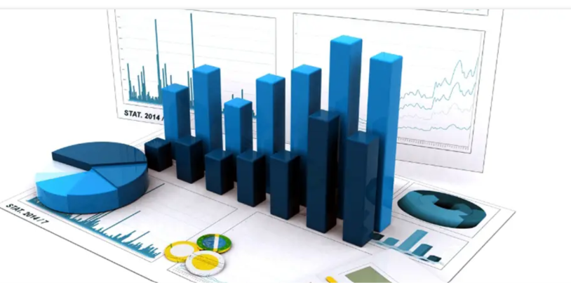

Independent thinking, backed by data.
Mindbrink Media is a research and data analysis company founded by graduates of IIT and IIM institutions.
Research that connects data with context.
We work across market research, public policy research and related areas of analytical intelligence. Our goal is to help clients understand complex environments through structured evidence rather than assumptions.
Our work can combine quantitative datasets, surveys, field intelligence, secondary research and analytical modelling depending on the problem.

Beyond our core offerings.
We also undertake related research and analytical assignments where structured data can improve understanding and decision-making.
Consumer & Social Research
Attitudes, behaviours, preferences and social trends using quantitative and qualitative research.

Competitive Intelligence
Market mapping, competitor tracking, sector research and strategic intelligence.

Forecasting & Modelling
Trend analysis, predictive models and scenario-based analysis for selected research problems.